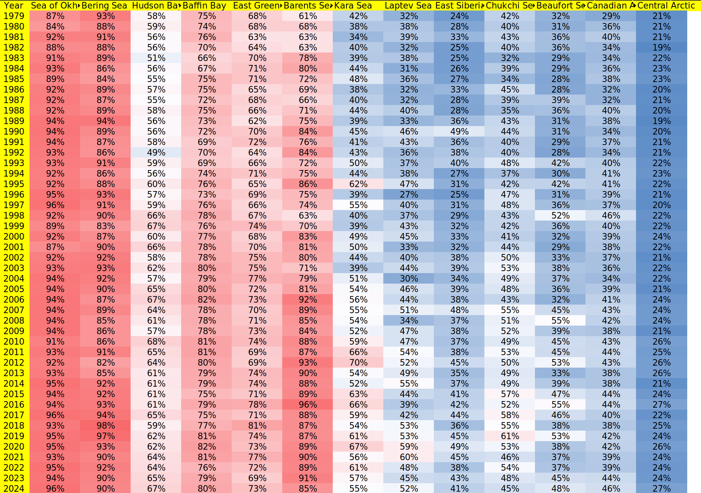
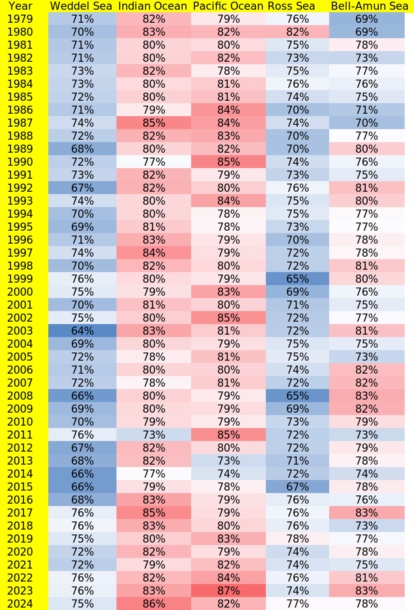

Regional Arctic AWP
AWP jumps are due to the elimination of coastline measurement errors
Arctic Regions: Sea of Okhotsk, Bering Sea, Hudson Bay, Baffin Bay, East Greenland Sea, Barents Sea, Kara Sea, Laptev Sea, East Siberian Sea, Chukchi Sea, Beaufort Sea, Canadian Archipelago, Central Arctic
Regional Antarctic AWP
Antarctic Regions: Weddel Sea, Indian Ocean, Pacific Ocean, Ross Sea, Bell-Amundsen Sea
AWP Heatmap
AWP in percent of Icefree conditions

